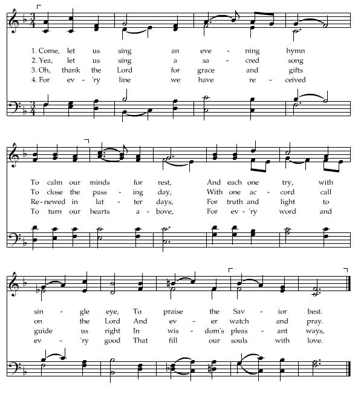
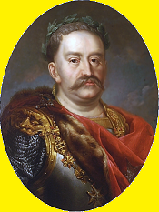

Lamentations of David over Saul and Jonathan
Lamentations de David sur Saül et Jonathan
From the MS at Towneley Hall, page 22
Tune - Mélodie"Come let us sing an evening hymn"
A Church hymn
Sequenced by Christian Souchon
|
To the tune:
The tune was chosen on account of its meter: 8 6 8 6. It could be matched with a variety of hymns with the same syllable arrangement (see Book of Psalm ). To the lyrics As mentioned in the title, this poem is an imitation of the "Song of the Bow" in the Bible, 2 Samuel 1:18, also known as "David's lamentation of Saul and Jonathan". Concerning this text, Wikipedia writes: "The traditional and mainstream religious interpretation of the relationship [between David and Jonathan] has been one of platonic love and an example of homosociality (friendship or ascendancy between two men or two women). Some later Medieval and Renaissance literature drew upon the story to underline strong personal friendships between men, some of which involved romantic love. In modern times, some scholars, writers, as well as activists have emphasized what they interpret as elements of homoeroticism (chaste or otherwise) in the story." The Jacobite imitation does not qualify for the third interpretation. |
 |
A propos de la mélodie:
Cette mélodie épouse le rythme métrique 8 6 8 6 du poème et convient à tous les cantiques présentant cette structure (Cf. Livre des Psaumes ). A propos du texte Comme le titre l'indique, ce poème est une imitation du "Chant de l'Arc" de la Bible, 2 Samuel 1:18, qu'on appelle aussi "les lamentations de David sur Saül et Jonathan". Concernant ce texte, Wikipédia écrit: "L'interprétation religieuse traditionnelle généralement admise est l'existence [entre David et Jonathan] d'un amour platonique présenté comme un exemple d'"homosocialité" (amitié ou ascendant entre deux hommes ou deux femmes). La littérature médiévale ou celle de la Renaissance, utilisèrent parfois cette histoire comme l'exemple type des solides amitiés entre hommes qui incluent quelques fois l'amour sentimental. De nos jours, certains érudits, des écrivains ou des activistes mettent l'accent sur certains passages qu'ils considèrent comme caractéristiques de l'"homo-érotisme" (chaste ou non)." L'imitation Jacobite ne saurait entrer dans cette troisième catégorie d'interprétation. |

|
over Saul and Jonathan Imitated 1. I mourn the Glory of our Isle, A Hero brave betray'd, I mourn a land devote to Spoil, And horrid CARNAGE made. 2. How fell the mighty in the fight on that accursed Morn, When from the Head which claimed its right, We saw the Laurels torn. 3. Oh! tell it not in Brunswick's street, Nor publish it in Zell [1]; Least Stranger Maids in Songs repeat How Low the mighty fell? 4. Ye Grampian mountains! on your Head, Nor dew descend, nor rain, The Target there in vain was spread, The broad Sword drawn in vain! 5. Alas! what need of kindly showers, Where Desolation reigns; The Sword and flames the land devours, And Scarce a Scot remains. 6. For Lo! the bloody Welp like Death, [2] At Cotts and Castles knocks, Spares nothing that has human breath, Nay murders Herds and flocks. 7. The Slaughtered Warriors swell the Hills, Yet the relentless foe, The Battle done, the wounded kills, No suppliant 'scapes the blow. 8. Not So the Gallant PRINCE behaved, On Gladsmuir's luckier plain, He fought, he conquered & he saved, Nor triumphed o'er the Slain. 9. How lovely all his Acts! How bright, The books of Fame among! More than Eagle swift in flight, More than a lion strong. 10. Ye Maidens o'er your lovers weep, Fallen in a noble Cause, The Harvest which they strove to reap, Was antient rights & LAWS! 11. Ye Daughters of the Land lament, Your hope betrayed & sold! He would have shone its ornament, And trimm'd your plaids with Gold! 12. How on the Native Hills so high, The loyal Clans were beat! And how, oh! Charles, when thou were't nigh, Could happen such defeat! 13. For thee, I suffer great distress, For thee I wear my Sword, My love for thee I can't express. Thou art my Lawful Lord. 14. My Love for Woman is far less, Oh ! thou my Soul's desire, With all the Stuart's tenderness, And Sobiesky's fire. [3] 15. Alas ! how are the mighty slain, Their warlike weapons broke! A race may soon arise again, And Burst this foreign yoke. Source: "From "English Jacobite Ballads...from the MS at Towneley Hall" by A.B. Grosart (1877), page 23 . |
sur Saül et Jonathan Imitation 1. De notre île hélas je pleure la gloire Et le courage trahi, Je déplore un pays que des barbares Saccagèrent à l'envi. 2. Et les héros tombés dans la bataille, Ce jour maudit à jamais, Quand de leur prince, tels des brins de paille, Se consumaient les lauriers. 3. N'en parlez pas dans les rues de Hanovre Ni de Celle, pour autant, [1] De peur que chez leurs filles notre opprobre Ne soit un sujet de chants. 4. Monts des Grampians, que ni pluie, ni rosée N'arrosent plus vos sommets, Où fut en vain tirée la Large-épée, En vain le targe levé! 5. A quoi bon la pluie, quand sur nos montagnes Tout n'est que désolation, Que le fer, le feu vident nos campagnes, Que fuit la population? 6. Le Chiot sanglant tel la mort à nos portes [2] Frappe, cabane ou château. Les humains il les massacre, il emporte Les récoltes, les troupeaux. 7. Les corps des guerriers morts couvrent la plaine, Mais le vainqueur en veut plus. Les blessés sont achevés avec haine. Quand les canons se sont tus. 8. Notre noble PRINCE agissait sans hargne Dans les plaines de Gladsmuir: Il vient, il combat, il vainc, il épargne Sans s'acharner sur les morts. 9. Tous ses actes sont empreints de noblesse Vantée par la Renommée! Celles d'un lion égalaient ses prouesses, Celles d'une aigle envolée. 10. Filles d'Ecosse, vos amants tombèrent Pour une Cause de choix, Une moisson qu'hélas ils n'engrangèrent: Les droits anciens et la LOI. 11. O versez vos larmes, filles d'Ecosse, Car votre espoir est trahi! Il vous eût vêtues comme pour des noces, Rehaussé d'or le pays. 12. Comment, si près de leurs hautes montagnes, Les clans loyaux ont-ils pu, En présence même du Prince Charles, A ce point être battus? 13. O mon Prince, j'endure la détresse, Moi qui maniait l'épée. Pour toi, Charles, j'éprouve une tendresse Jamais encore exprimée. 14. Bien moindre est l'amour que l'on porte aux femmes. Je trouve en toi réunis De la race des Stuart la grandeur d'âme Et l'ardeur des Sobieski. [3] 15. Peuple puissant, voici qu'on te terrasse, Que ton glaive est fracassé. Vienne bientôt une nouvelle race Briser le joug étranger! (Trad. Christian Souchon (c) 2011) |
over Saul and Jonathan George Wither (1588 - 1667) 1.1 Thy beauty, Israel, is gone: Slain in the places high is he. 1.2 The mighty now are overthrown! Oh! thus how commeth it to be? 2. Let not this news their streets throughout In Gath or Askalon be told; For fear Philistia’s daughters flout, Lest vaunt the uncircumcised should. 3.1 On you hereafter let no dew, You mountains of Gilboa, fall: 3.2 Let there be neither showers on you, Nor fields that breed an offering shall; 3.3 For there with shame away was thrown The target of the strong, alas! 4.1 The shield of Saul, even as of one That nev’r with oil anointed was. 4.2 Nor from their blood that slaughter’d lay, Nor from the fat of strong men slain, 5. Came Jonathan his bow away, Nor drew forth Saul his sword in vain; 6. In life time they were lovely fair, In death they undivided are; More swift than eagles of the air, And stronger they than lions were. 7. Weep, Israel’s daughters! weep for Saul, Who you with scarlet hath aray’d, Who clothed you with pleasures all, And on your garments gold hath laid. 8.1 How comes it he that mighty was The foil in battle doth sustain? Thou Jonathan! oh, thou, alas! Upon thy places high wert slain. 8.2. And much distressed is my heart, My brother Jonathan, for thee; My very dear delight thou wert, And wondrous was thy love to me: 8.3 So wondrous it surpassed far The love of women ev’ry way. 9. Oh! how the mighty fallen are! How warlike instruments decay! |
sur Saül et Jonathan II Samuel (Chant de l'Arc) 1.1 La splendeur d'Israël a-t-elle péri sur tes hauteurs? 1.2 Comment sont tombés les héros? 2. Ne l'annoncez pas à Geth, ne le publiez pas dans les rues d'Ascalon, de peur que les filles des Philistins ne se réjouissent; de peur que les filles des incirconcis n'exultent! 3. Montagnes de Gelboé, qu'il n'y ait sur vous ni rosée ni pluie, ni champs de prémices! Car là fut jeté bas le bouclier des héros. 4. Le bouclier de Saül n'était pas oint d'huile, mais du sang des blessés, de la graisse des vaillants; 5. L'arc de Jonathan ne recula jamais en arrière, et l'épée de Saül ne revenait pas inactive. 6. Saül et Jonathan, chéris et aimables dans la vie et dans la mort, ils ne furent point séparés. Ils étaient plus agiles que les aigles, ils étaient plus forts que les lions. 7. Filles d'Israël, pleurez sur Saül, qui vous revêtait de pourpre au sein des délices, qui mettait des ornements d'or sur vos vêtements! 8.1 Comment les héros sont-ils tombés dans la bataille? Jonathan a été percé sur tes hauteurs! 8.2 L'angoisse m'accable à cause de toi, Jonathan, mon frère. Tu faisais tous mes délices; 8.3 ton amour m'était plus précieux que l'amour des femmes. 9. Comment les héros sont-ils tombés? Comment les guerriers ont-ils péri? (Trad. Bible des Moines de Maredsous) |
|
[1]
Zelle
:
George II's mother, Sophia Dorothea was Princess of Zelle. [2] Welp : Whelp, Guelph or Guelf another name for the House of Hanover [3] Sobiesky : By his mother, Maria Clementina Sobieska, Prince Charles was the great-grand-son of the famous and courageous King John Sobieski III of Poland (1629 - 1696), who victoriously fought the Turks in the 1683 battle of Vienna and was therefore held as the saviour of European Christendom. |
 |
[1]
Celle
: La mère de George II, Sophie Dorothée était Princesse de Celle.
[2] Chiot : en anglais "Whelp", mot à rapprocher de Guelf, Guelfe, autre nom des Hanovre. [3] Sobieski : Par sa mère, Marie-Clémentine Sobieski, le prince Charles était l'arrière petit-fils du fameux et courageux roi de Pologne, Jean III Sobiesky (1629 - 1696) qui combattit victorieusement les Turcs à Vienne en 1683 et fut pour cette raison considéré comme le sauveur de la chrétienté en Europe. |
|
|
||